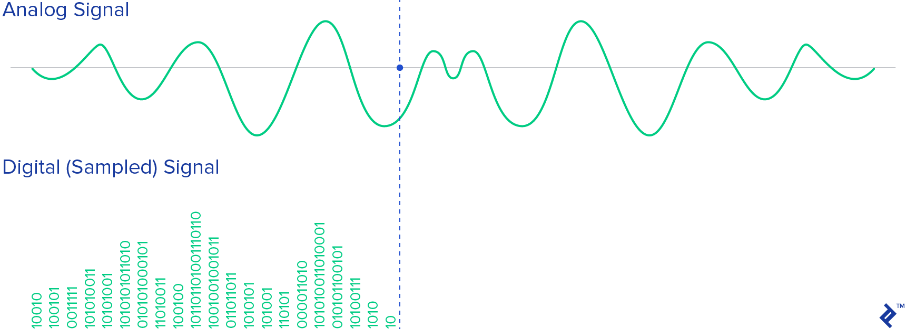
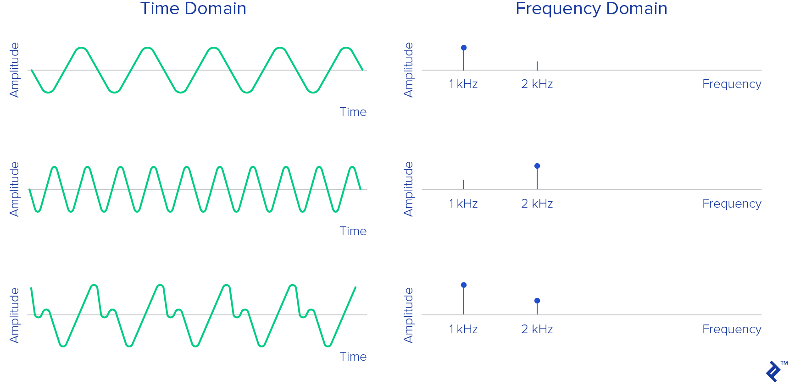
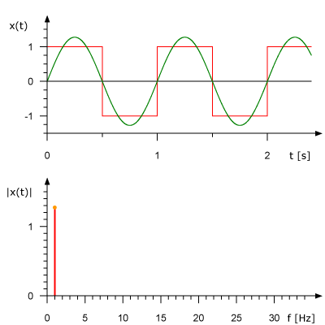
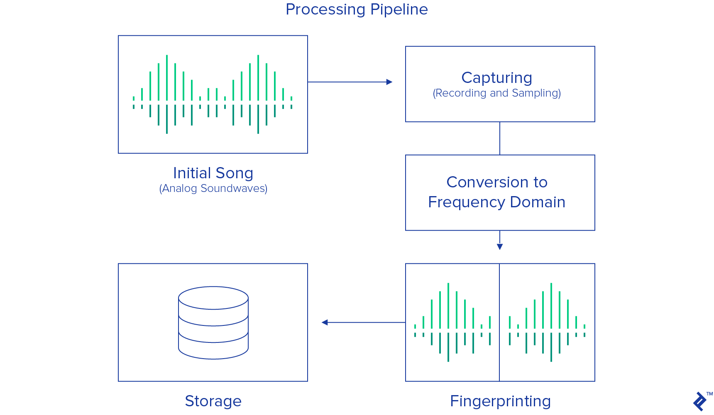

Abstract: You hear a familiar songin the club or the restaurant. You listened to this songa thousand times long ago, and the sentimentality of the songreally touches your heart. You desperately want to heart it tomorrow, but you can’t remember its name! Fortunately, in our amazing futuristic world, you have a phone with music recognition software installed, and you are saved. But how does this really work? Shazam’s algorithm was revealed to world in 2003. In this article we’ll go over the fundamentals of that algorithm.
You hear a familiar song in the club or the restaurant. You listened to this song a thousand times long ago, and the sentimentality of the song really touches your heart. You desperately want to hear it tomorrow, but you can’t remember its name! Fortunately, in our amazing futuristic world, you have a phone with music recognition software installed, and you are saved. You can relax, because software told you the name of the song, and you know that you can hear it again and again until it becomes a part of you…or you get sick of it.
Mobile technologies, along with the huge progress in audio signal processing, have given us algorithm developers the ability to create music recognizers. One of the most popular music recognition apps is Shazam. If you capture 20 seconds of a song, no matter if it’s intro, verse, or chorus, it will create a fingerprint for the recorded sample, consult the database, and use its music recognition algorithm to tell you exactly which song you are listening to.
But how does music recognition work? Shazam’s algorithm was revealed to world by its inventor Avery Li-Chung Wang in 2003. In this article we’ll go over the fundamentals of Shazam’s music recognition algorithm and answer the question: How does Shazam work?
Analog to Digital - Sampling a Signal
Readers searching for Shazam AI and Shazam machine learning may be surprised to find that the Shazam algorithm involves neither of these technologies, even if they did exist in various forms back then. If Shazam isn’t AI music recognition, what exactly is its approach?
To answer that, we first have to ask: What is sound, really? Is it some sort of mystical material that we cannot touch but which flies into our ears and makes us hear things?
Of course, this is not quite the case. We know that in reality, sound is a vibration that propagates as a mechanical wave of pressure and displacement, through a medium such as air or water. When that vibration comes to our ears, particularly the eardrum, it moves small bones which transmit the vibration further to little hair cells deep in our inner ear. Finally, the little hair cells produce electrical impulses, which are transmitted to our brain through the auditory ear nerve.
Recording devices mimic this process fairly closely, using the pressure of the sound wave to convert it into an electrical signal. An actual sound wave in air is a continuous pressure signal. In a microphone, the first electrical component to encounter this signal translates it into an analog voltage signal - again, continuous. This continuous signal is not so useful in the digital world, so before it can be processed, it must be translated into a discrete signal that can be stored digitally. This is done by capturing a digital value that represents the amplitude of the signal.
The conversion involves quantization of the input, and it necessarily introduces a small amount of error. Therefore, instead of a single conversion, an analog-to-digital converter performs many conversions on very small pieces of the signal - a process known as sampling.
The Nyquist-Shannon Theorem tells us what sampling rate is necessary to capture a certain frequency in continuous signal. In particular, to capture all of the frequencies that a human can hear in an audio signal, we must must sample the signal at a frequency twice that of the human hearing range. The human ear can detect frequencies roughly between 20 Hz and 20,000 Hz. As a result, audio is most often recorded at a sampling rate of 44,100 Hz. This is the sampling rate of Compact Discs, and is also the most commonly used rate with MPEG-1 audio (VCD, SVCD, MP3). (This specific rate was originally chosen by Sony because it could be recorded on modified video equipment running at either 25 frames per second (PAL) or 30 frames per second (using an NTSC monochrome video recorder) and cover the 20,000 Hz bandwidth thought necessary to match professional analog recording equipment of the time.) So, when choosing the frequency of the sample that is needed to be recorded you will probably want to go with 44,100 Hz.
Recording - Capturing the Sound
Let’s get into some Shazam code.
Recording a sampled audio signal is easy. Since modern sound cards already come with analog-to-digital converters, just pick a programming language, find an appropriate library, set the frequency of the sample, number of channels (typically mono or stereo), sample size (e.g. 16-bit samples). Then open the line from your sound card just like any input stream, and write to a byte array. Here is how that can be done in Java:
private AudioFormat getFormat() {
float sampleRate = 44100;
int sampleSizeInBits = 16;
int channels = 1; //mono
boolean signed = true; //Indicates whether the data is signed or unsigned
boolean bigEndian = true; //Indicates whether the audio data is stored in big-endian or little-endian order
return new AudioFormat(sampleRate, sampleSizeInBits, channels, signed, bigEndian);
}
final AudioFormat format = getFormat(); //Fill AudioFormat with the settings
DataLine.Info info = new DataLine.Info(TargetDataLine.class, format);
final TargetDataLine line = (TargetDataLine) AudioSystem.getLine(info);
line.open(format);
line.start();
Just read the data from TargetDataLine. (In this example, the running flag is a global variable which is stopped by another thread - for example, if we have GUI with the STOP button.)
OutputStream out = new ByteArrayOutputStream();
running = true;
try {
while (running) {
int count = line.read(buffer, 0, buffer.length);
if (count > 0) {
out.write(buffer, 0, count);
}
}
out.close();
} catch (IOException e) {
System.err.println("I/O problems: " + e);
System.exit(-1);
}
Time-Domain and Frequency-Domain
What we have in this byte array is signal recorded in the time domain. The time-domain signal represents the amplitude change of the signal over time.
In the early 1800s, Jean-Baptiste Joseph Fourier made the remarkable discovery that any signal in the time domain is equivalent to the sum of some (possibly infinite) number of simple sinusoidal signals, given that each component sinusoid has a certain frequency, amplitude, and phase. The series of sinusoids that together form the original time-domain signal is known as its Fourier series.
In other words, it is possible to represent any time domain signal by simply giving the set of frequencies, amplitudes, and phases corresponding to each sinusoid that makes up the signal. This representation of the signal is known as the frequency domain. In some ways, the frequency domain acts as a type of fingerprint or signature for the time-domain signal, providing a static representation of a dynamic signal.
The following animation demonstrates the Fourier series of a 1 Hz square wave, and how an (approximate) square wave can be generated out of sinusoidal components. The signal is shown in the time domain above, and the frequency domain below.
Analyzing a signal in the frequency domain simplifies many things immensely. It is more convenient in the world of digital signal processing because the engineer can study the spectrum (the representation of the signal in the frequency domain) and determine which frequencies are present, and which are missing. After that, one can do filtering, increase or decrease some frequencies, or just recognize the exact tone from the given frequencies.
The Discrete Fourier Transform
So we need to find a way to convert our signal from the time domain to the frequency domain. Here we call on the Discrete Fourier Transform (DFT) for help. The DFT is a mathematical methodology for performing Fourier analysis on a discrete (sampled) signal. It converts a finite list of equally spaced samples of a function into the list of coefficients of a finite combination of complex sinusoids, ordered by their frequencies, by considering if those sinusoids had been sampled at the same rate.
One of the most popular numerical algorithms for the calculation of DFT is the Fast Fourier transform (FFT). By far the most commonly used variation of FFT is the Cooley–Tukey algorithm. This is a divide-and-conquer algorithm that recursively divides a DFT into many smaller DFTs. Whereas evaluating a DFT directly requires O(n2) operations, with a Cooley-Tukey FFT the same result is computed in O(n log n) operations.
It’s not hard to find an appropriate library for FFT. Here are few of them:
- C – FFTW
- C++ – EigenFFT
- Java – JTransform
- Python – NumPy
- Ruby – Ruby-FFTW3 (Interface to FFTW)
Below is an example of an FFT function written in Java. (FFT takes complex numbers as input. To understand the relationship between complex numbers and trigonometric functions, read about Euler’s formula.)
public static Complex[] fft(Complex[] x) {
int N = x.length;
// fft of even terms
Complex[] even = new Complex[N / 2];
for (int k = 0; k < N / 2; k++) {
even[k] = x[2 * k];
}
Complex[] q = fft(even);
// fft of odd terms
Complex[] odd = even; // reuse the array
for (int k = 0; k < N / 2; k++) {
odd[k] = x[2 * k + 1];
}
Complex[] r = fft(odd);
// combine
Complex[] y = new Complex[N];
for (int k = 0; k < N / 2; k++) {
double kth = -2 * k * Math.PI / N;
Complex wk = new Complex(Math.cos(kth), Math.sin(kth));
y[k] = q[k].plus(wk.times(r[k]));
y[k + N / 2] = q[k].minus(wk.times(r[k]));
}
return y;
}
And here is an example of a signal before and after FFT analysis:

Music Recognition: Fingerprinting a Song
One unfortunate side effect of FFT is that we lose a great deal of information about timing. (Although theoretically this can be avoided, the performance overheads are enormous.) For a three-minute song, we see all the frequencies and their magnitudes, but we don’t have a clue when in the song they appeared. But this is the key information that makes the song what it is! Somehow we need to at know what point of time each frequency appeared.
That’s why we introduce kind of sliding window, or chunk of data, and transform just this part of the information. The size of each chunk can be determined in a few different ways. For example, if we record the sound, in stereo, with 16-bit samples, at 44,100 Hz, one second of such sound will be 44,100 samples * 2 bytes * 2 channels ≈ 176 kB. If we pick 4 kB for the size of a chunk, we will have 44 chunks of data to analyze in every second of the song. That’s good enough density for the detailed analysis needed for audio identification.
Now back to programming:
byte audio [] = out.toByteArray()
int totalSize = audio.length
int sampledChunkSize = totalSize/chunkSize;
Complex[][] result = ComplexMatrix[sampledChunkSize][];
for(int j = 0;i < sampledChunkSize; j++) {
Complex[chunkSize] complexArray;
for(int i = 0; i < chunkSize; i++) {
complexArray[i] = Complex(audio[(j*chunkSize)+i], 0);
}
result[j] = FFT.fft(complexArray);
}
In the inner loop we are putting the time-domain data (the samples) into a complex number with imaginary part 0. In the outer loop, we iterate through all the chunks and perform FFT analysis on each.
Once we have information about the frequency makeup of the signal, we can start forming our digital fingerprint of the song. This is the most important part of the entire Shazam audio recognition process. The main challenge here is how to distinguish, in the ocean of frequencies captured, which frequencies are the most important. Intuitively, we search for the frequencies with the highest magnitude (commonly called peaks).
However, in one song the range of strong frequencies might vary between low C - C1 (32.70 Hz) and high C - C8 (4,186.01 Hz). This is a huge interval to cover. So instead of analyzing the entire frequency range at once, we can choose several smaller intervals, chosen based on the common frequencies of important musical components, and analyze each separately. For example, we might use the intervals this guy chose for his implementation of the Shazam algorithm. These are 30 Hz - 40 Hz, 40 Hz - 80 Hz and 80 Hz - 120 Hz for the low tones (covering bass guitar, for example), and 120 Hz - 180 Hz and 180 Hz - 300 Hz for the middle and higher tones (covering vocals and most other instruments).
Now within each interval, we can simply identify the frequency with the highest magnitude. This information forms a signature for this chunk of the song, and this signature becomes part of the fingerprint of the song as a whole.
public final int[] RANGE = new int[] { 40, 80, 120, 180, 300 };
// find out in which range is frequency
public int getIndex(int freq) {
int i = 0;
while (RANGE[i] < freq)
i++;
return i;
}
// result is complex matrix obtained in previous step
for (int t = 0; t < result.length; t++) {
for (int freq = 40; freq < 300 ; freq++) {
// Get the magnitude:
double mag = Math.log(results[t][freq].abs() + 1);
// Find out which range we are in:
int index = getIndex(freq);
// Save the highest magnitude and corresponding frequency:
if (mag > highscores[t][index]) {
points[t][index] = freq;
}
}
// form hash tag
long h = hash(points[t][0], points[t][1], points[t][2], points[t][3]);
}
private static final int FUZ_FACTOR = 2;
private long hash(long p1, long p2, long p3, long p4) {
return (p4 - (p4 % FUZ_FACTOR)) * 100000000 + (p3 - (p3 % FUZ_FACTOR))
* 100000 + (p2 - (p2 % FUZ_FACTOR)) * 100
+ (p1 - (p1 % FUZ_FACTOR));
}
Note that we must assume that the recording is not done in perfect conditions (i.e., a “deaf room”), and as a result we must include a fuzz factor. Fuzz factor analysis should be taken seriously, and in a real system, the program should have an option to set this parameter based on the conditions of the recording.
To make for easy audio search, this signature becomes the key in a hash table. The corresponding value is the time this set of frequencies appeared in the song, along with the song ID (song title and artist). Here’s an example of how these records might appear in the database.
| Hash Tag | Time in Seconds | Song |
|---|---|---|
| 30 51 99 121 195 | 53.52 | Song A by artist A |
| 33 56 92 151 185 | 12.32 | Song B by artist B |
| 39 26 89 141 251 | 15.34 | Song C by artist C |
| 32 67 100 128 270 | 78.43 | Song D by artist D |
| 30 51 99 121 195 | 10.89 | Song E by artist E |
| 34 57 95 111 200 | 54.52 | Song A by artist A |
| 34 41 93 161 202 | 11.89 | Song E by artist E |
If we run a whole library of songs through this music identification process, we can build up a database with a complete fingerprint of every song in the library.
The Music Algorithm: Song Identification
To identify a song that is currently playing in the club, we record the song with our phone, and run the recording through the same audio fingerprinting process as above. Then we can start searching the database for matching hash tags.
As it happens, many of the hash tags will correspond to the music identifier of multiple songs. For example, it may be that some piece of song A sounds exactly like some piece of song E. Of course, this is not surprising - musicians have always “borrowed” licks and riffs from each other, and these days producers sample other songs all the time. Each time we match a hash tag, the number of possible matches gets smaller, but it is likely that this information alone will not narrow the match down to a single song. So there is one more thing that we need to check with our music recognition algorithm, and that is the timing.
The sample we recorded in the club might be from any point in the song, so we cannot simply match the timestamp of the matched hash with the timestamp of our sample. However, with multiple matched hashes, we can analyze the relative timing of the matches, and therefore increase our certainty.
For example, if you look in the table above, you will see that hash tag 30 51 99 121 195 corresponds to both Song A and Song E. If, one second later, we match the hash 34 57 95 111 200, that’s one more match for Song A but in this case we know that both the hashes and time differences matches.
// Class that represents specific moment in a song
private class DataPoint {
private int time;
private int songId;
public DataPoint(int songId, int time) {
this.songId = songId;
this.time = time;
}
public int getTime() {
return time;
}
public int getSongId() {
return songId;
}
}
Let’s take i 1 and i 2 as moments in the recorded song, and j 1 and j 2 as moments in the song from database. We can say that we have two matches with time difference match if three things are all true:
- RecordedHash(i1) = SongInDBHash(j1)
- RecordedHash(i2) = SongInDBHash(j2)
- abs(i1-i2) = abs(j1-j2)
This gives us flexibility to record the song from the beginning, middle, or end.
Finally, it is unlikely that every single moment of the song we record in the club will match every corresponding moment of the same song in our library, recorded in the studio. The recording will include a lot of noise that will introduce some error in the matches. So instead of of trying to eliminate all but the correct song from our list of matches, at the very end, we sort all the matched songs in descending order of likelihood, and our favorite is the first song on the ranking list.
From Top to Bottom
To answer the question, “How does Shazam work?” here’s an overview of the entire music recognition and matching process, from top to bottom:
For this kind of system, the database can get pretty huge, so it is important to use some kind of scalable database. There is no special need for relations, and the data model ends up being pretty simple, so it is a good case for using some kind of NoSQL database.
How Does Shazam Work? Now You Know
This kind of song recognition software can be used for finding the similarities between songs. Now that you understand how Shazam works, you can see how this can have applications beyond simply Shazaming that nostalgic song playing on the taxi radio. For example, it can help to identify plagiarism in music, or to find out who was the initial inspiration to some pioneers of blues, jazz, rock, pop or any other genre. Maybe a good experiment would be to fill up the song sample database with the classical music of Bach, Beethoven, Vivaldi, Wagner, Chopin and Mozart and try finding the similarities between songs. You would think that even Bob Dylan, Elvis Presley and Robert Johnson were plagiarists!
But still we cannot convict them, because music is just a wave that we hear, memorize and repeat in our heads, where it evolves and changes until we record it in the studio and pass it on to the next great musical genius.